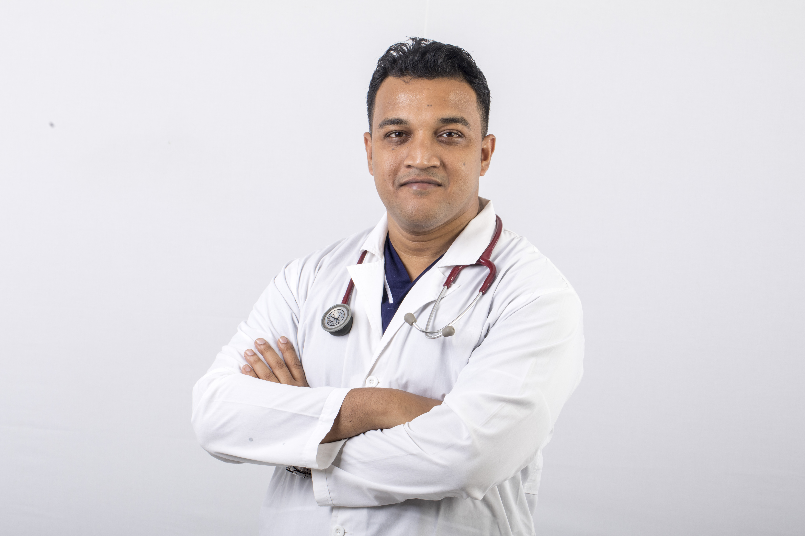

Curriculum Vitae of

DR. MD. NURUL HUDY AJHARY
Address: House No-13, Road No-04,
Kaderabad Housing, Mohammadpur,
Dhaka-1207.
Email:mnhudy@gmail.com
Contact No: 01911150650
Career Objective
To develop my professional skill participating in the highly competitive and dynamic world of globalization combining my scholastic potentiality and creativity to be he best devoted professional in such an organization, where I will get the maximum opportunities to discover myself in the best possible way.
Educational Qualifications
Diploma In Cardiology (D-Card)
- Name of institution : National Institute of Cardiovascular Diseases
- Name of University :Bangabandhu Sheikh Mujib Medical University
- Passing Year : 2020
- Result : Passed
Diploma In Medical Ultrasound(DMU)
- Name of institution : CMUD
- Name of University :Daffodil International University
- Passing Year : 2018
- Result : Passed
Certificate Course in Diabetology (CCD)
- Name of institution : BIRDEM
- Passing Year : 2014
- Result : Passed
Bachelor of Medicine and Bachelor of Surgery (MBBS)
- Name of institution : Sir Salimullah Medical College
- Name of University :Dhaka University
- Passing Year : 2009
- Result : Passed
Higher Secondary Certificate (H.S.C)
- Name of Institute : Notre Dame College
- Name of Board : Dhaka
- Group : Science
- Passing Year : 2003
- Result : GPA 4.50
Secondary School Certificate (S.S.C)
- Name of institution : Anjuman Adarsha Govt. High School
- Name of Board : Dhaka
- Group : Science
- Passing Year : 2001
- Result : GPA 4.75
Experience
- Joined as Govt. Medical Officer in 32nd BCS and working as Assistant Registrar (Cardiology) in National Institute of Cardiovascular Diseases, (NICVD), Shre-E-Bangla Nagar, Dhaka till now.
Computer Skills
Skill And Competencies
- Strong Communication
- Excellent Presentation skill
- Self motivated and flexible mentality
- Ability to work alone and with other under pressure
Language Skill
- Bengali-(Mother Tongue)
- English-Good at listening, reading, writing & speaking
Personal Information
- Full Name : Md. Nurul Hudy Ajhary
- Father's Name :Abul Munsur
- Mother's Name :Mst. Nurunnahar Begum
- Dath of Birth :20th October, 1985
- Nationality :Bangladeshi (by birth)
- Religion :Islam
- Blood Group :A positive
- National ID No:19857227409217023
- Marital Status :Married
- Permanent Address :Vill-Bolainogua;P.O.-Netrakona
Upazila-Netrakona Sadar;Dist-Netrakona.
.................................................
Dr. Md. Nurul Hudy Ajhary
BMDC Reg. No.- A 55609
Date: